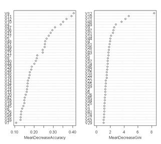
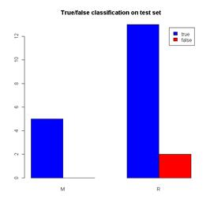
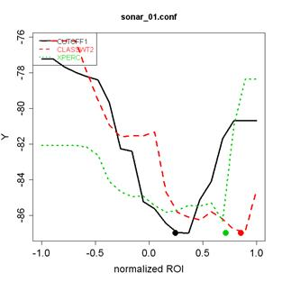
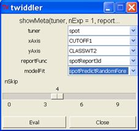
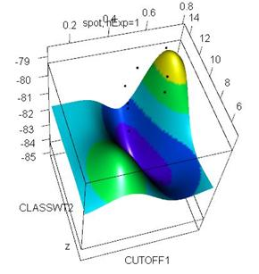
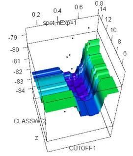
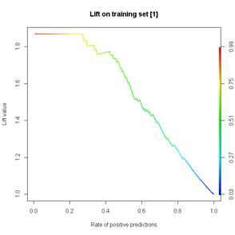

Wolfgang Konen, Patrick Koch
Cologne University of Applied Sciences
Last update: July 2013
Contents
The TDMR Tutorial: Examples for Tuned Data Mining in R
Lesson 2: SPOT tuning on task SONAR
Lesson 3: “The Big Loop” on task SONAR
Lesson 5: Interactive Visualization
Lesson 6: Performance Measure Plots
Lesson 7: Tuner CMA-ES ( rCMA)
Frequently Asked Questions (FAQ)
How can I rerun a certain best tuning solution and test it on the same / other data?
How can I make with a trained model new predictions?
How can I add a new tuning parameter to TDMR?
How can I add a new machine learning algorithm to TDMR?
How can I add a new tuning algorithm to TDMR?
The TDMR framework is written in R with the aim to facilitate the training, tuning and evaluation of data mining (DM) models. It puts special emphasis on tuning these data mining models as well as simultaneously tuning certain preprocessing options.
This document (TDMR-tutorial.html)
· describes the TDMR installation
· shows example usages: how to use TDMR on new data mining tasks.
· provides a FAQ-section (frequently asked questions)
This document should be read in conjunction with TDMR-docu.html, which describes more details and software concepts of TDMR.
Both documents concentrate more on the software usage aspects of the TDMR package. For a more scientific discussion of the underlying ideas and the results obtained, the reader is referred to [Kone10a, Kone11b].
Both documents are available as CIOP Reports (PDF) under references [Kone12a] and [Kone12b].
Once you have R (http://cran.r-project.org/), > 2.14, up and running, simply install TDMR with
|
> install.packages("TDMR"); > library(TDMR); |
demo/demo00sonar.r
demo/demo01cpu.r
Suppose that you have a dataset and want to build a DM model for it. To be concrete, we consider the classification dataset SONAR (see UCI repository or package mlbench for further info on SONAR) with the data file sonar.txt.
If you want to build a DM classification model with TDMR, you need to provide two files, sonar_00.apd and main_sonar.r [1]. The first file, sonar_00.apd (.apd = algorithmic problem design), is already in preparation for later tuning (see Lesson02 and Lesson03), it defines in list opts all relevant settings for the DM model building process. The second file, main_sonar.r, contains the DM model building process. It gets with list opts the settings and returns in list result the evaluation of the DM model. The list result is either inspected by the user or by the tuning process
|
##
sonar_00.apd ## for a complete list of all default settings and many explanatory comments opts = tdmOptsDefaultsSet(); opts$dir.data <- "data/"; opts$filename = "sonar.txt" opts$READ.CMD = "readCmdSonar(filename,opts)" opts$data.title <- "Sonar Data" |
Here, tdmOptsDefaultsSet() will construct a default list opts with all relevant settings. See TDMR-docu, Appendix B for a complete list of all elements and all defaults for list opts. You need to specify only those things which differ from tdmOptsDefaultsSet(): in this case most importantly the filename and directory of the SONAR dataset and a string opts$READ.CMD containing the data-reading command.
|
main_sonar <- function(opts=NULL, dset=NULL, tset=NULL) {
if (is.null(opts)) source("sonar_00.apd", local=TRUE); opts <- tdmOptsDefaultsSet(opts); # fill in all opts params which are not yet set
gdObj<-tdmGraAndLogInitialize(opts); # init graphics and log file
#=============================================== # PART 1: READ DATA #=============================================== if (is.null(dset)) { cat1(opts,opts$filename,": Read data ...\n") dset <- tdmReadData(opts); } names(dset)[61] <- "Class" # 60 columns V1,...,V60 with input data, one response # column "Class" with levels ["M" (metal) | "R" (rock)]
# which variables are input variables (in this case all others): input.variables <- setdiff(names(dset), c(response.variable))
#=============================================== # PART 2: Model building and evaluation #=============================================== result <- tdmClassifyLoop(dset,response.variable,input.variables,opts,tset);
# print summary output and attach certain columns (here: y, sd.y, dset) to list result: result <- tdmClassifySummary(result,opts,dset);
tdmGraAndLogFinalize(opts,gdObj); # close graphics and log file
result; } |
|
|
This function is invoked with
|
result <- main_sonar(); |
or alternatively with
|
demo(demo00sonar,ask=F); |
In the first case, the control flow will pass through the branch if (is.null(opts)), in the second case demo00sonar.r will define opts and pass it to main_sonar(opts). In either case, sonar_00.apd is sourced.
There is an additional short function defined in main_sonar.r:
|
readCmdSonar <- function(filename,opts) { |
The setting
opts$READ.CMD = “readCmdSonar(filename,opts)”;
tells TDMR that TDMR’s function tdmReadData should invoke readCmdSonar and pass
the value of opts$filename to readCmdSonar’s argument filename. Any other
user-defined function can be supplied here, the only rules are
· that it has to return a data frame dset
· that the string opts$READ.CMD contains an argument “filename”
You need to specify in main_sonar.r what column in dset is response variable (classification target) and what columns are used for input (in this case all the others, because the SONAR dataset does not have ID columns or otherwise irrelevant columns).
When you start the DM model building process with
result <- tdmClassifyLoop(dset,response.variable,input.variables,opts,tset);
the following things happen: Since you do not specify anything else, an RF (random forest) model will be built (opts$MOD.method=”RF”) and the dataset will be divided by random sampling in a training part (90%) and test part (10%), based on opts$TST.kind=”rand”, opts$TST.testFrac=0.1. Since you do not specify anything from the opts$SRF-block, you use the default SRF variable ranking (opts$SRF.kind =”xperc”, opts$SRF.Xperc=0.95). This means that the most important columns containing about 95% of the overall importance will be selected.
Now, function tdmClassifyLoop() builds an RF model using the training data and evaluates it on training and validation data. It returns an object result.
The object result of class TDMclassifier is explained in more detail in Table 3 of TDMR-docu.
Some of the graphics output generated by tdmClassifyLoop:
|
 Figure 1: RF-based variable importance for task sonar. |
 Figure 2: True/false classification for the two classes M and R of task sonar. |
The two plots in Figure 1 show the RF-based importance, where MeanDecreaseAccuracy, which has V9, V11 and V12 as the most important variables, is the more reliable measure. The right plot in Figure 2 shows the true/false classifications on the test set (which is here however rather small, so the results are not very reliable, a more reliable test set classification would be obtained with opts$TST.kind=”cv”).
If you want to do a SPOT tuning [Bart10e] on task SONAR, you should follow the steps described in TDMR Workflow, Level 2 and create in addition to main_sonar.r from Lesson01 the three small files sonar_01.conf, sonar_01.apd and sonar_01.roi. The files’ content may look for example like this:
sonar_01.conf:
|
alg.func = "tdmStartSpot" alg.resultColumn = "Y" alg.seed = 1235
io.apdFileName = "sonar_01.apd" io.roiFileName = "sonar_01.roi" io.verbosity = 3; auto.loop.steps = 50; # number of SPOT’s sequential generations auto.loop.nevals = 100; # concurrently, max number of algo evaluations may be specified
init.design.func = "spotCreateDesignLhd"; init.design.size = 10; # number of initial design points init.design.repeats = 1; # number of initial repeats
seq.merge.func <- mean; seq.design.size = 100; seq.design.retries = 15; seq.design.maxRepeats = 2; seq.design.oldBest.size <- 1; seq.design.new.size <- 3; seq.predictionModel.func = "spotPredictRandomForest";
report.func = "spotReportSens" |
sonar_01.apd:
|
opts = tdmOptsDefaultsSet(); # set initial defaults for many elements of opts. See tdmOptsDefaults.r # for the list of those elements and many explanatory comments opts$dir.data <- "data/"; opts$filename = "sonar.txt" opts$READ.CMD = "readCmdSonar(filename,opts)" # def'd in main_sonar.r opts$data.title <- "Sonar Data"
opts$RF.mtry = 4 opts$NRUN = 1 # how many runs with different train & test samples - or - # how many CV-runs, if TST.kind="cv" opts$GD.DEVICE="non" # ["pdf"|"win"|"non"]: all graphics to # [one multi-page PDF | (several) windows (X11) | dev.null] opts$GD.RESTART=F; opts$VERBOSE = opts$SRF.verbose = 0; |
sonar_01.roi:
|
name low high type CUTOFF1 0.1 0.80 FLOAT CLASSWT2 5 15 FLOAT XPERC 0.90 1.00 FLOAT opts$VERBOSE = opts$SRF.verbose = 0; |
The three parameter CUTOFF1, CLASSWT2 and XPERC are tuned within the borders specified by sonar_01.roi. Usually you should set opts$GRAPHDEV=”non” and opts$GD.RESTART=F to avoid any graphic output and any graphics device closing from main_sonar.r, so that you get only the graphics made by SPOT.
After this preparation, the SPOT tuning is started with demo/demo02sonar.r:
|
path <- paste(.find.package("TDMR"), "demo02sonar",sep="/"); oldwd <- getwd(); setwd(path);
tdm=tdmDefaultsFill(mainFile="main_sonar.r");
source("sonar_01.apd"); # read in opts-settings source(tdm$mainFile); spotUserConfig = list(tdm=tdm,spot.fileMode=F, opts=opts); spotConfig = spot("sonar_01.conf","auto",spotConfig=spotUserConfig);
setwd(oldwd); # restore old working directory
|
spotConfig will contain on output the usual SPOT results (see SPOT manual [Bart10e])
- spotConfig$alg.currentResult
- spotConfig$alg.currentBest
The tuning will stop after 16 sequential steps with the configuration CONFIG=58, because the budget of auto.loop.nevals=100 evaluations is exhausted. The best solution can be seen from the last line of spotConfig$alg.currentBest.
With
|
spot(“sonar_01.conf”,”rep”, spotConfig); |
the results from a prior tuning run are reused and a report including a sensitivity plot (see Figure 3) is made.
|
 |
 |
|
Figure 3: Sensitivity plot. Each ROI [low,high] is mapped to the normalized ROI [-1,1] on the abscissa.
|
Figure 4: The user interface in tdmPlotResMeta. The user may select the tuner, the design variables to show on x- and y-axis, the display function (spotReport3d or spotReportContour) and the metamodel function (modelFit). Two optional sliders are nExper and nSkip (see text).
|
The sensitivity plot shows the response of the metamodel in the vicinity of the best solution. Consider for example the black line (CUTOFF1) in Fehler! Verweisquelle konnte nicht gefunden werden.: This line is produced by fixing the other parameters (CLASSWT2, XPERC) at their best-solution values (green and red dot) and varying CUTOFF1 within its ROI-interval [0.10, 0.80], which is mapped to the normalized abscissa [-1.0, 1.0] in the plot. The black line is the response of the metamodel. The best-solution value of CUTOFF1 is the black dot. The steep valley of the black line around the black dot shows that the metamodel is quite sensitive to CUTOFF1.
See Sec. "Details for Lesson 2" in TDMR-docu for more details
demo/demo03sonar.r
demo/demo03sonar_A.r
demo/demo03sonar_B.r
To start “The Big Loop”, you configure a file similar to demo/demo03sonar.r:
|
path <- paste(.find.package("TDMR"), "demo02sonar",sep="/"); oldwd <- getwd(); setwd(path); source("main_sonar.r"); # in working dir
tdm <- list( mainFunction="main_sonar" , umode=c("RSUB") # ["CV" | "RSUB" | "TST"] , tuneMethod = c("spot","lhd") , filenameEnvT="demo03.RData" # file to save environment envT (in working dir) , nrun=5, nfold=2 # repeats and CV-folds for the unbiased runs , nExperim=2 , parallelCPUs=1 , optsVerbosity = 0 # the verbosity for the unbiased runs ); ## tdm$runList can contain also more than one file (e.g. c("sonar_01.conf","sonar_02.conf")):. tdm$runList = c("sonar_04.conf"); spotStep = "auto"; # spotStep can be either "auto" (do automatic tuning) or # "rep" (make a visual report and an unbiased run on best results) ## construct an initial environment envT from the given TDMR settings in tdm envT <- tdmMakeNewEnvT(tdm);
envT <- tdmBigLoop(envT,spotStep);
setwd(oldwd); #
restore old working directory |
demo03sonar.r specifies a vector of TDMR tasks in tdm$runList (a vector of .conf files), and it specifies a vector of tuners in tdm$tuneMethod, e.g. c(“spot”,“lhd”) and other values of tdm. Then it calls tdmBigLoop.
Here, this script will trigger the following sequence of experiments:
- sonar_04.conf is started with tuner spot
- sonar_04.conf is started with tuner lhd
This sequence of 2 tuning experiments is repeated nExperim=2 times. The corresponding 4 result lines are written to data frame envT$theFinals.[2]
The resulting data frame envT$theFinals contains:
|
CONF TUNER NEXP CLASSWT2 XPERC NRUN NEVAL RGain.bst RGain.avg RGain.OOB sdR.OOB RGain.RSUB sdR.RSUB sonar_02 lhd 1 12.026543 0.930197 3 36 86.70213 84.3676 84.4311 1.03715 83.73984 5.63268 sonar_02 spot 1 14.713475 0.981312 3 36 86.96809 84.6926 85.6287 1.03715 86.99187 7.04085 sonar_03 lhd 2 8.037636 0.954494 3 36 81.91489 78.6643 80.4391 1.82937 79.67480 7.45134 sonar_03 spot 2 7.375221 0.914740 3 35 81.91489 78.7082 78.8423 0.34571 74.79675 2.81634
|
Here CLASSWT2 and XPERC are the tuning parameters, the other columns of the data frame are defined in Table 2 of TDMR-docu.html.
In the case of the example above, the tuning process had a budget of NEVAL=36 model trainings, resulting in a best solution with class accuracy RGain.bst (in %). The average class accuracy (mean w.r.t. all design points) during tuning is RGain.avg. When the tuning is finished, the best solution is taken and NRUN=3 unbiased evaluation runs are done with the parameters of the best solution. Since the classification model in this example is RF (Random Forest), an OOB-error from the 3 trainings is returned, with average RGain.OOB and standard deviation sdR.OOB. Additionally, NRUN=3 trainings are done with random subsampling (RSUB) of the data set in training and test set, resulting in an average class accuracy on the test set RGain.RSUB and the corresponding standard deviation in sdR.RSUB.
Note that the standard deviation sdR.RSUB is in this case quite large (because the test set is very small). A more reliable result might be obtained with tdm$umode=“CV” instead of “RSUB”.
See "Details for Lesson 3" in TDMR-docu for more details
Once a lesson-3 experiment is completed,
the return value envT from tdmBigLoop() contains the result of such an experiment and
may be visually inspected. Alternatively, envT may be loaded from an
appropriate .RData file. The call
|
tdmPlotResMeta(envT); |
allows to visually inspect all RES data frames contained in envT.
The user interface is shown and explained in Figure 4. An additional combo box “confFile” appears only, if envT$runList has more than one element. An additional slider “nExper” appears only, if envT$tdm$nExperim>1.
|
Figure 5: Two example outputs from tdmPlotResMeta with reportFunc=spotReport3d. Left: modelFit = spotPredictGausspr, right: = spotPredictRandomForest. |
|
The user selects with “tuner”, “confFile” and “nExper” a certain RES data frame from envT. This data frame contains a collection of function evaluations for certain design points selected by the tuner. With one of the metamodel construction functions (see package SPOT for further details)
· spotPredictGausspr
· spotPredictRandomForest
· spotPredictMlegp
a metamodel is fitted to the RES data frame and the result is shown as shaded surface in the plot. The RES data points are shown as black points in Figure 5.
Since certain “bad” RES point may dominate the plot as outliers and hinder the user to inspect the region near the optimum, there are two options to suppress “bad” points:
1. If the slider nSkip has a value >0, then the nSkip RES data points with the worst y-value are discarded.
2. If the checkbox “Skip incomplete CONFIGs” is activated, then design points belonging to a configuration which was not evaluated maxRepeats times are discarded (relevant for SPOT only).
Note that both options will reduce the number of RES data points. This will also affect the metamodel fit, so use both options with care, if the number of RES data points is small.
The plots created with spotReport3d make use of the rgl-package. They can be interactively manipulated with the mouse. They can be selected and saved as PNG images with commands like
|
rgl.set(7); rgl.snapshot(“myFile.png”); |
A complete demo example is invoked with:
|
demo(demo05visMeta); |
With the help of package ROCR [Sing05], several area performance measures can be used for binary
classification. The file demo/demo06ROCR.r shows an example:
|
setwd(paste(.find.package("TDMR"), "demo02sonar",sep="/")); source("main_sonar.r"); opts = tdmOptsDefaultsSet(); opts$READ.CMD = "read.csv2(file=...)" opts$data.title <- "Sonar Data"; opts$rgain.type <- "arROC"; result = main_sonar(opts); tdmGraphicNewWin(opts); cat("Area under ROC-curve for validation data set: "); print(tdmROCRbase(result)); # side effect: plot ROC-curve tdmGraphicNewWin(opts); cat("Area under lift curve for training data set: "); print(tdmROCRbase(result,dataset="training",typ="lift")); # side effect: plot lift chart |
|
 |
 |
|
Figure 6: Left: ROC chart, right: lift chart, as produced by demo06ROCR.r with the help of package ROCR [Sing05]. The bar on the right side of each plot shows a color coding of the cutoff parameter. |
|
Once the variable result contains an object of class TDMclassifier, it is also possible to inspect such an object interactively and to plot ROC-, lift- or precision-recall-chart for the training set or the validation set:
|
tdmROCR(result); |
A twiddler interface for object result shows up, as shown in Figure 7, and allows to select between different performance measure plots:
|
 |
|
Figure 7: The user interface of tdmROCR. The user may select the dataset (training or validation), the type of plot (ROC, lift, or precision-recall) and the number of run (only if Opts(result)$NRUN>1). |
This demo shows for tuner cma_j (CMA-ES,
Java version via package rCMA) a complete tuned data mining process (TDMR,
level 3). Other settings are the same as in demo03sonar.r, except that we use
sonar_03.conf as configuration file.
This demo does the same as demo03sonar.r, but it runs 4 experiment on 4 parallel cores (if your environment supports parallel clusters with the R-core package 'parallel').
Rerun your Lesson-3 script with spotStep =”rep”, this will re-use the current best solution in environment envT.
Or use the following code snippet:
|
envT = tdmEnvTLoad("demoSonar.RData"); # load envT |
Line 1 loads a previously constructed envT from an .RData file.
Line 4 makes solely the sensitivity plot (w/o unbiased runs), if envT$tdm$nrun would be 0. But here we set envT$tdm$nrun=2, i.e. two unbiased runs with the best tuning solution contained in envT are done with the usual test data set.
Run your Lesson-3 script or Lesson-4 script to produce an environment envT, which is an object of class TDMenvir.
There is an element lastModel defined in envT which contains the model trained on the best tuning solution
during the last unbiased run. TDMR defines a function predict.TDMenvir , which makes it easy to do new predictions:
|
newdata=read.csv2(file="cpu.csv", sep=""),
dec=".")[1:15,]; |
Notes:
· If the new data contain factor variables (e.g. vendor in case of CPU data), it is necessary that levels(newdata$vendor) is the same as during training. Therefore we read in the above code snippet first all CPU-data and then shorten them to the first 15 records.
· If envT is saved to .RData file, normally lastModel will be set to NULL (smaller .RData files). If you want to do predictions, you need to save lastModel: set tdm$U.saveModel=TRUE prior to running tdmBigLoop.
· See the example in demo/demo04cpu.r and in predict.TDMenvir.
· [user] Add a new line to userMapDesign.csv in directory tdm$path.[3] Suppose you want to tune the variable opts$SRF.samp: add to file userMapDesign.csv a line
|
SRF.SAMP; opts$SRF.samp; 0 |
This specifies that whenever SRF.SAMP appears in a .roi file in dir tdm$path, the tuner will tune this variable. TDMR maps SRF.SAMP to opts$SRF.SAMP.
· [developer] Add similarly a new line to tdmMapDesign.csv. This means that the mapping is available for all tasks, not only for those in the current tdm$path.
· [optional, for developer] For a new variable opts$Z, add a default-value-line to tdmOptsDefaultsSet(). Then all existing and further tasks have this default setting for opts$Z.
see section “How to integrate new machine learning algorithms” in TDMR_docu.
See section “How to integrate new tuners” in TDMR_docu.
[Bart10e] T. Bartz-Beielstein. SPOT: An R package for automatic and interactive tuning of optimization algorithms by sequential parameter optimization. Technical Report, FH Köln, 2010
[Kone10a] W. Konen, P. Koch, O. Flasch, T. Bartz-Beielstein. Parameter-tuned data mining: A general framework. In F. Hoffmann and E. Hüllermeier, editors, Proceedings 20. Workshop Computational Intelligence. Universitätsverlag Karlsruhe, 2010.
[Kone11b] W. Konen, P. Koch, O. Flasch, T. Bartz-Beielstein. Tuned Data Mining: A Benchmark Study on Different Tuners, Proc. GECCO 2011, Dublin, July 2011.
[Sing05] Tobias Sing, Oliver Sander, Niko Beerenwinkel, Thomas Lengauer. ROCR: visualizing classifier performance in R. Bioinformatics 21(20):3940-3941 (2005). See also http://rocr.bioinf.mpi-sb.mpg.de/